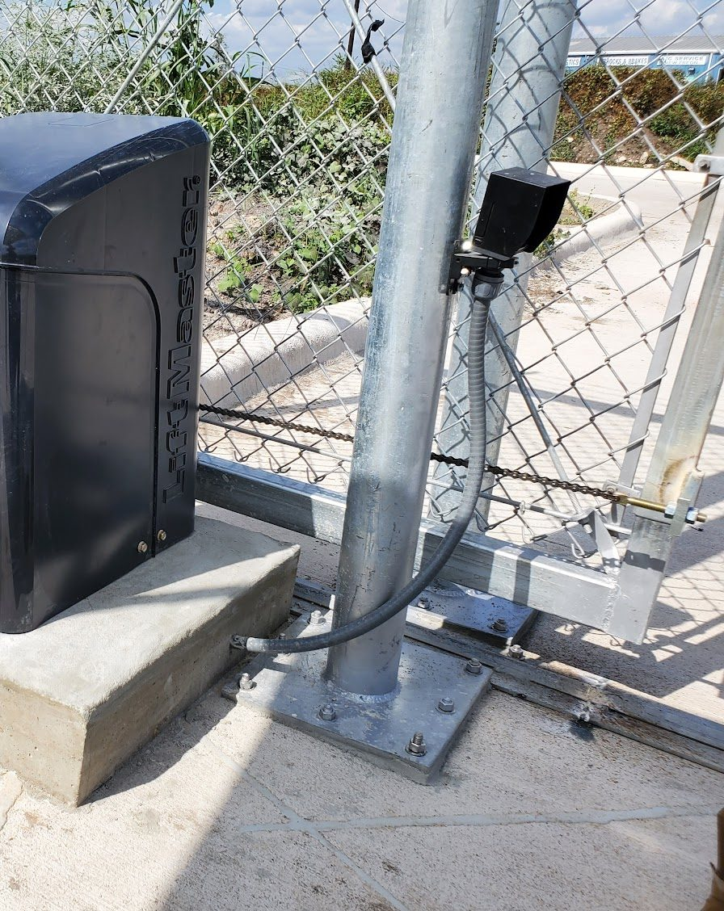
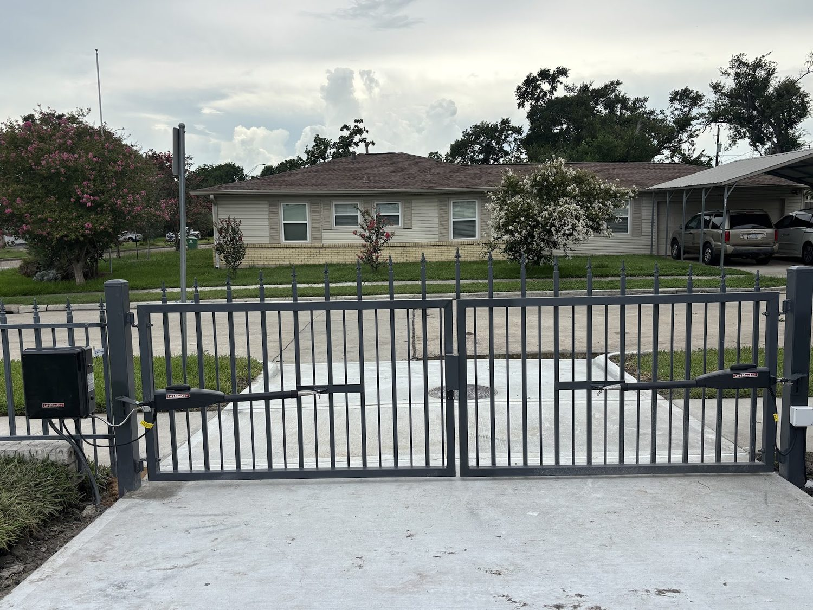
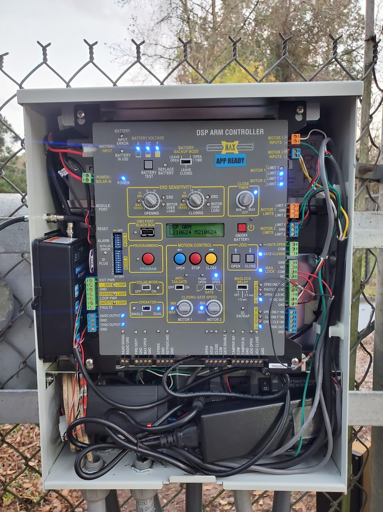
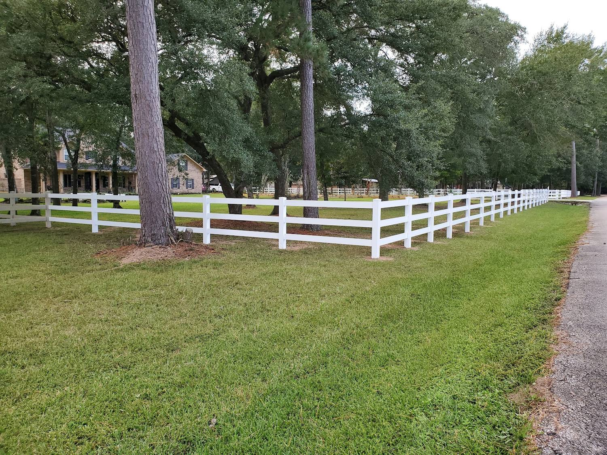

01
Automatic gate installation
Driveway, walk, courtyard or commercial entrance. The operator, the post, the conduit and the settings, put in as one job.

Houston, Texas — gates, operators, control boards, fences
Automatic gate installation, gate operator and control board repair, custom gates, fences and gate maintenance across Houston. Tell us whether it opens, whether it closes, and what it does in between.
Status
Open
A gate should clear the whole driveway and stop where it is told to. One that stops halfway has lost its limit setting, or is looking at something it should not be.
Closing
A gate that reverses in the middle of the driveway has found something in its path. That is the safety circuit doing exactly what it is there to do, not a broken gate.
Secure
Once it is shut, the gate is a lock you can see from the road. What closes it, and how it knows it is closed, matters as much as what opens it.
The board
Almost everything on this list passes through the same place: a control board in a box by the post. That is where the fault usually is, and it is the part of a gate most people have never had to look at.

01
Driveway, walk, courtyard or commercial entrance. The operator, the post, the conduit and the settings, put in as one job.
02
A board that has lost its settings, its code or its outputs. Sometimes it needs a part, sometimes it needs somebody to read what it is telling you.
03
Designed and built to the opening, not bought and dropped in. Sliding or swinging, steel or wrought, to suit the drive it has to close.

04
Lubrication, limits, safety edges and photo eyes, checked on the same visit as anything else that is not quite right.
05
A motor that grinds, a gate that runs heavy, or one that never quite gets home. Often it is the arm, the bushings or a limit switch rather than the motor itself.

Fences too
A fence is a line of posts, rails and panels, and a gate is the part of it that moves. Putting the two in together is easier than doing the fence first and discovering afterwards that the gate does not line up with it.
So fences are on the same list. The same people who set the post and the conduit will build the run between them.
4.9
stars on Google
Authentix Gate Systems
Houston, Texas
That is the phrase the reviews use, and it happens to be the most accurate description of the job there is: a gate that opens and will not close, or one that has stopped answering its remotes.
Read the reviews on GoogleQuestions
A gate that will not close is usually sitting in the middle of a safety check rather than broken. Something in the path, a photo eye that has moved, or a limit switch set wrong will all stop it, and the gate is doing exactly what it is built to do. Do not force it. Call and say what it does and where it stops.
A remote is a transmitter that talks to a receiver in the control board, usually through a code that has to be programmed into the board before it will listen. Bringing the remote and the gate's make and model is usually enough. The label on the operator box is what settles it.
Most operators carry a battery so the gate still opens when the power goes. If it does not, the battery is the first thing to look at rather than the motor. A gate that will not open in a blackout is the one worth calling about before it stops opening at all.
A photo of the label on the operator, a photo of the control board with the cover off, and a note on what the gate does when you press the button: opens, stops halfway, reverses, or nothing at all. Those three things settle most of it before anybody drives out.
Contact
Phone is quickest. Text suits a photograph of the control board taken with the cover off. Email suits anything with a gate drawing attached.